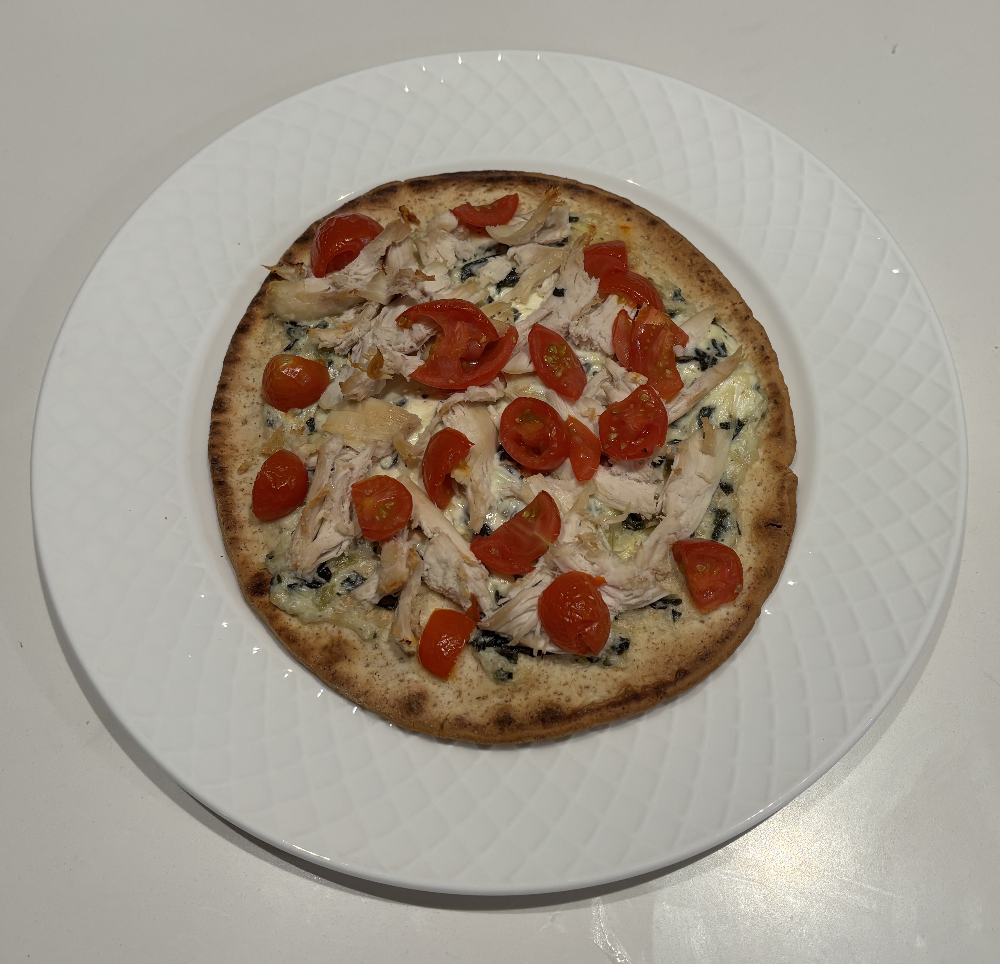

Home
Artichoke Chicken Pizza

Makes 4 servings
Ingredients
- Pita bread
- Artichoke dip
- Rotisserie chicken
- Diced cherry tomatoes
Steps
- Preheat the oven to 425 degrees
- Place pita bread on parchment paper on a baking sheet
- Spread the spinach artichoke dip on liberally on the pita bread leaving a small border around the edge
- Scatter the chicken and tomatoes over the top
- Bake at 425 degrees for 10-12 minutes, until the dip is bubbling and the bread is crispy
- Slice the pita bread and serve warm